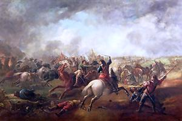

Lesley's Marches to Scotland and to Longmaston Moor (1644)
From David Herd's "Ancient and Modern Scottish Songs", volume 1, page 115, 1769,Joseph Ritson's in "Scotish Songs", volume II , class III, n°9, in 1794
and James Hogg's "Jacobite Relics", Volume I, songs N° 3 & 4, 1819
Marches de Lesley: Marche sur l'Ecosse et Marche de Marston Moor
Recueillies par David Herd dans "Chants écossais anciens et modernes", volume I ,page 115, 1769,et par Joseph Ritson dans ses "Scotish Songs", volume II , class III, n°9, en 1794
et par James Hogg dans ses "Reliques Jacobites", vol. I, N° 3 et 4, 1819

Tune - Mélodie: Lesley's March
From "Jacobite Relics", vol.1, 1819
Variant : Leshly's March
From H.Atkinson's Tunebook, 1694
Sequenced by Ch.Souchon
|
To the tune
The present version appears in Joseph Ritson 's "Scotish Songs, volume II in 1794 and in Hogg 's "Relics", volume I in 1819. It is copied from James Oswald's "Caledonian Pocket Companion" , a series of 12 books published in London in 1743-59. These Pre-Jacobite "Cavalier songs" (see "Whigs, awa" ), quoted in his "Minstrelsy of the Scottish Border", inspired Sir Walter Scott with the famous song "The Blue Bonnets over the Border" (similar tune and lyrics in his novel "The Monastery", 1830) They are identical in tune with the Irish song "Dirty James that lost Ireland" . A quite different version, though still recognisable in some passages, entitled "Leshly's March" , appears in Henry Atkinson Manuscript Tunebook, pp. 151 - 152, 1694. |
A propos de la mélodie
La présente version est celle donnée par Joseph Ritson dans le volume II de ses "Scotish Songs" (1794) et par Hogg dans ses "Reliques" (volume I, 1819). Elle est copiée du recueil de James Oswald, le "Vademecum calédonien" en 12 volumes publiés à Londres entre 1743 et 1759. Ces "chants de "Cavaliers" pré-jacobites (cf. "Whigs, awa" ), cités dans sa "Minstrelsy of the Scottish Border" inspirèrent à Walter Scott son fameux "Les Bonnets bleus passent la frontière" (paroles et musiques similaires, dans son roman de 1830, "Le monastère".) La mélodie est la même que celle du chant irlandais "Ce méchant Jacques qui perdit l'Irlande" . Une version très différente, quoique reconnaissable dans certains passages, se trouve, sous le titre "Leshly's March" , dans le Carnet de chants manuscrits de Henri Atkinson, pp.151 - 152, 1694. |
Sheet music - Partition

|
LESLEY'S [1] MARCH TO SCOTLAND
("Relics": Song N°3)
1. March! March! Pinks of election, [2] Why the devil don't you march onward in order? March, march, dogs of redemption, Ere the Blue bonnets [3] come over the Border; You shall preach, you shall pray, You shall teach night and day, You shall prevail o'er the Kirk [4] gone a-whoring; Dance in blood to the knees, Blood of God's enemies! The daughters of Scotland shall sing you to snoring. 2. March! March! dregs of all wickedness! Glory that lower you can't be debased! March! March! Dunghills of blessedness! March and rejoice, for you shall be raised. Not to board, not to rope, But to faith and to hope, Scotland's athirst for the truth to be taught her; Her chosen virgin race, How they will grow in grace, Round as a neep, like calves for the slaughter. 3. March! March! Scourges of heresy! Down with the Kirk and its whilliebaleery! March! March! Down with supremacy [5] And the kist fu' o' whistles [6], that makes sic a cleary. Fifemen and pipers braw, Merry deils take them a' Gown, lace and livery, - lickpot and laddle! - Jockey shall wear the hood, Jenny the sark [7] of God, For codpiece and petticoat, dish-clout and daidle. 4. March! March! Blest ragamuffins! Sing, as ye go, the hymns of rejoicing! March! March! Justified ruffians! Chosen of Heaven! to glory you're rising. Ragged and treacherous. Lousy and lecherous, Objects of misery, scorning and laughter; Never, O happy race, Magnified so was grace. Host of the righteous, rush to the slaughter! GENERAL LESLY'S MARCH TO LONGMASTON MOOR ("Relics": Song N°4) [8] (David Herd's "Scottish Songs" version as printed by Joseph Ritson in "Scotish Songs", Class III, N°9, page 37, 1794). March, march! Why the deil do ye na march? Stand to your arms, my lads, Fight in good order; March, march, why the deil do ye na march? Stand to your arms, my lads, Fight in good order; 1a. Front about, front about, Ye musketeers all, Till ye come to the English border. Stand till't and fight like men, True gospel to maintain; The parliament['s] blyth to see us a-coming. 2a. When to the kirk we come, We'll purge it ilka room, Frae popish relicts and a' sic innovation. That all the warld may see There's nane i' the right but we, Of the auld Scottish nation. 3a. Jenny shall wear the hood, Jocky the sark of God! And the kist fou o' whistles That makes sic a cleiro. Our pipers braw shall have them a', Whate'er come on it. Busk up your plaids, my lads, Cock up your bonnets. March, march, etc. |
L'ENTREE DE LESLEY [1] EN ECOSSE
("Reliques": Chant N°3)
1. Marche! Marche! Peuple élu de Dieu Que n'avances-tu pas comme tu sais le faire, Chiens de la rédemption [2], avant que Les Bonnets bleus [3] ne passent la Frontière? Oh prêchez et priez, Jour et nuit enseignez! Et vous vaincrez l'église licencieuse [4], Versant le sang de qui Du Ciel est l'ennemi. Ecossaises, chantez-leur des berceuses! 2. Marche! Marche! Lie de l'humanité! Plus bas ne saurait descendre la gloire Marche! Marche! Fumier sanctifié! Marchez, heureux: votre renom va croître. Pas de gibet qui soit! Mais l'espoir et la Foi! L'Ecosse en a soif et veut qu'on l'enseigne Ce bon peuple innocent. Qu'il sera séduisant, Rond comme rave ou comme veau qu'on saigne! 3. Marche! Marche! Fléau de l'hérésie! A bas l'église d'Ecosse fantasque! Marche! A bas la suprématie, [5] Caisse à sifflets [6] qui les oreilles casse; Vous, sonneurs de binious, Allez, prenez leur tout: Chape, surplis, étole; - à pleines louches! - Jacques aura la palle, [7] Jeanne le corporal, Pour faire des jupons, nappes et couches; 4. Marche! Marche! Va-nu-pieds bénis! Chantez tout en marchant d'édifiants cantiques! Marche! Marche! Peuple élu d'abrutis A qui Dieu réserve un sort mirifique! Enguenillés et gueux, Lubriques et pouilleux Objets d'opprobe, de honte et sarcasmes, Jamais autant on ne Vanta vos traits gracieux Armée des justes, courez au massacre! MARCHE DU GENERAL LESLY A MARSTON MOOR ("Reliques": Chant N°4) [8] (Version de David Herd telle que donnée par Joseph Ritson dans ses "Scotish Songs", Classe III, N°9, page 37, 1794). Marche! Marche! Pourquoi ne marchez-vous pas? Sabre au clair, mes enfants, Pas de désordre! Marche! Marche! Pourquoi ne marchez-vous pas? Sabre au clair, mes enfants, Pas de désordre! 1a. Demi-tour! Mousquetaires, Faites donc marche arrière! Il faut aller vers la frontière anglaise. Défendez vaillamment La foi de vos parents Le Parlement de vous voir est bien aise. 2a. L'église où nous entrons, Nous la débarrassons Des reliques et inventions du Pape. Il faut que chacun voie Qu'il n'est point d'autre choix Et qu'aucun Ecossais ne nous échappe. 3a. Jeannette aura la palle, Jacques le corporal. Quant aux maudits sifflets Qui tels des pies jacassent, Nos joueurs de binious, Les pendront à leurs cous. (Quoi qu'il arrive) Que vos plaids, vos bonnets Soient bien en place! Marche! Marche! Etc. Traduction Ch. Souchon (c) 2009 |
|
[1] These songs may refer to either:
ALEXANDER LESLY (1582 - 1661), created in 1641 earl of Leven, was a Scottish field marshal who first fought in Dutch, then Swedish service where he wan great victories. Back to Scotland in 1638 he was appointed commander of the Covenanters army and defeated the Royalists first in Scotland (Edinburgh), then in England. He rose again against King Charles I. in 1641. Though he participated in the Battle of Marston Moor (or Longmaston Moor, in Yorkshire), he fled in the middle of the battle (3rd July 1644)... or, more likely , DAVID LESLEY (1600 - 1682) who was Commander in second of the Whig armies who fought for the English Parliament from 1644 and took an essential part in the victory of (Long) Ma(r)ston Moor (near York) on 2nd July 1644. In 1645 he came back to Scotland and routed the Royalists of Montrose at Philiphaugh. By 1650 the Scottish Covenanters backed Charles II and Leslie fought for the King. He was defeated and captured by Cromwell at Worcester in 1651 but was released on the restoration of Charles II in 1650. [2] In a note in his "Reliques", Hogg explains that "[Leslie's] cruelties in Scotland after his victory over Montrose (at Newark-on-Yarrow in 1645, at Cantire in 1646) must have incited some of the 'Cavaliers' (see "Awa, Whigs, awa" ) to write these songs in mockery of him and his army of furious zealots...to a tune that is well known to have been his favourite march... and, wild as some of the expressions are, they are the very essence of sarcasm and derision and possess a spirit and energy for which we may look in vain in any other song existing..." (a fact which caused Hogg to suspect at first that the MS transmitted by Mr Gordon of Ford "might be one of the wild effusions of Burns"). [3] "Bluebonnet" refers to the Scottish traditional blue coloured version of the Tam o'shanter hat and is tantamount to "Scottish soldier". [4] The Kirk of Scotland. [5] Supremacy : Charles I (19 November 1600 – 30 January 1649) was King of England, Scotland and Ireland from 27 March 1625, until his death. He famously engaged in a struggle for power with Parliament; he was an advocate of the divine right of kings, but his foes in Parliament feared that he was attempting to gain absolute power. There was widespread opposition to many of his actions, especially the levying of taxes without Parliament's consent. [6] "Kist (chest) fu' o' whistles" =organ (?). Charles also adopted a religious policy that continued the Anglican "middle path," and was actively hostile to the Reformist tendencies of many of his English and Scottish subjects. His policy was obnoxious to Calvinist theology, and insisted that the Church of England's liturgy be celebrated with all of the ceremony and vestments called for by the Book of Common Prayer. Many of his subjects thought these policies brought the Church of England too close to Roman Catholicism. [7] Scots " sark " is for "shirt". Maybe the cloth covering the chalice. [8] Longmaston is for "Marston" : "A garbled copy" of the previous song says Hogg in his note. Apparently, he does not know that it is copied from Ritson. |
[1] Ces chants se rapportent, ou bien à:
ALEXANDRE LESLIE (1582 -1661) qui fut fait comte de Leven en 1641, était un maréchal écossais qui combattit dans les armées hollandaise puis suédoise où il remporta d'importantes victoires. De retour en Ecosse en 1638, il fut nommé chef de l'armée des Covenantaires et vainquit l'armée royale en Ecosse (Edimbourg), puis en Angleterre. Il reprit les armes contre Charles I. en 1641. Bien qu'il ait participé à la bataille de Marston Moor (ou Longmaston Moor, dans le Yorkshire), il est connu pour avoir fui avant la fin des combats... ou bien, et c'est plus vraisemblable , à: DAVID LESLEY (1600 - 1682) qui commanda en second les armées écossaises combattant pour le parlement anglais à partir de 1644 et qui remportèrent, surtout grâce à lui, la victoire de (Long) Ma(r)ston Moor (près d'York), le 2 juillet 1644. En 1645 il revint en Ecosse et mit en déroute les royalistes de Montrose à Philiphaugh. Vers 1650, les Covenantaires écossais soutinrent Charles II et Leslie se rangea aux côtés du roi. Il fut vaincu et fait prisonnier par Cromwell à Worcester en 1651, et fut libéré à la restauration de Charles II, en 1650. [2] Dans une note, Hogg expose que "les atrocités que Leslie commit en Ecosse après sa victoire sur Montrose (à Newark-on-Yarrow en 1645, à Cantire en 1646) doivent avoir incité quelque 'Cavalier' (Cf. "Dehors, les Whigs, dehors" ) à composer ces chants pour se moquer de lui et de son armée de zélotes forcenés...sur un air dont chacun sait qu'il fut sa marche favorite ... et quelque débridées que puissent être certaines expressions, on trouve ici du sarcasme et de la dérision à l'état pur, comme on en chercherait en vain dans d'autres chants de ce type..." (ce qui conduisit Hogg à voir tout d'abord quelque "effusion sauvage" de Burns dans ce manuscrit transmis par M.Gordon of Ford). [3] Bonnets bleus : Il s'agit du "Tam o'shanter", le bonnet bleu traditionnel écossais et plus spécialement des soldats écossais. [4] "Kirk" , dans le texte scots, désigne l'Eglise réformée d'Ecosse. [5] "Suprematie" : Charles I (1er novembre 1600- 20 janvier 1649) fut roi d'Angleterre, d'Ecosse et d'Irlande du 27 mars 1625 jusqu'à sa mort. Il est connu pour le combat qui l'opposa au Parlement; Il fut le champion de la monarchie de droit divin, tandis que ses opposants au Parlement luttaient pour l'empêcher d'exercer un pouvoir absolu. Il rencontra une large opposition, en particulier lorsqu'il voulut lever des impôts sans le consentement du Parlement. [6] Caisse à sifflets = Orgue (?): En matière religieuse la politique de Charles était la continuation de la "voie moyenne" anglicane, violemment hostile aux tendances réformistes de beaucoup de ses sujets anglais et écossais. Elle était insupportable aux théologiens calvinistes, car elle tendait à imposer la liturgie et les habits sacerdotaux qu'exigeait le "Livre Commun de Prières". Aussi, beaucoup craignaient-ils de voir l'Eglise Anglicane par trop se rapprocher du Catholicisme Romain tant exécré. [7] En dialecte scot: " chemise de Dieu ". [8] Longmaston pour "Marston": Hogg considère qu'il s'agit d'une "copie embrouillée" du chant précédent. A l'évidence, il ne sait pas qu'elle est tirée du recueil de Ritson. |